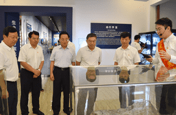
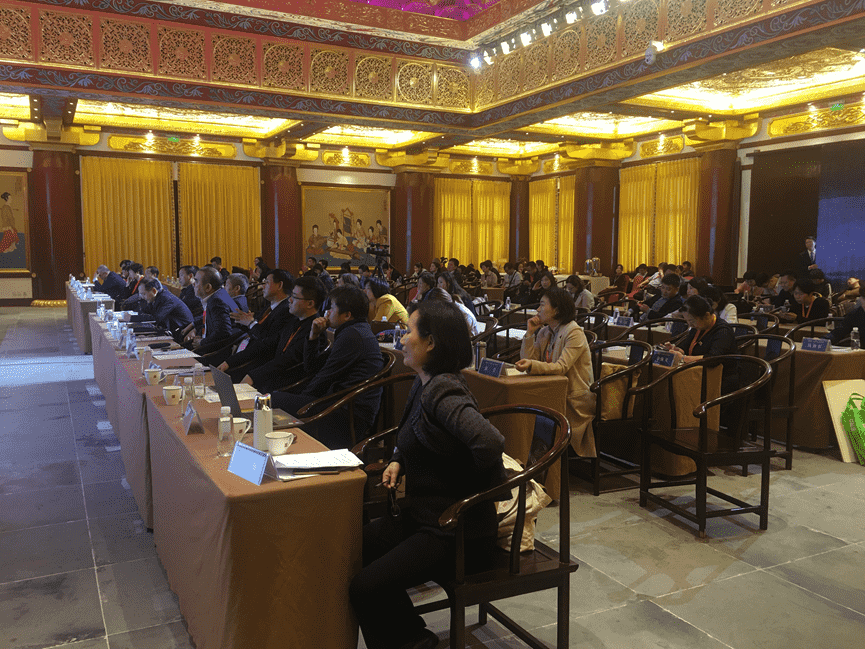

实时更新森泰最新资讯
Real time update of Sentai's latest consultation
上传时间:2019年10月20日
继10月19日二里头夏都遗址博物馆开馆之后，20日由中国博物馆协会、中国文物报社、洛阳市文物局共同主办的“曲高亦和众——文化遗产大众化传播论坛” 在古都洛阳隆重开幕。国家文物局博物馆与社会文物司、中国博物馆协会、河南省文物局、洛阳市人民政府、中国文物报社等单位领导；中央广播电视总台、北京卫视、腾讯微视、快手平台等传媒机构代表；以及来自意大利、法国、俄罗斯、美国、澳大利亚等20余个国家和地区的约270名专家学者齐聚一堂，共议古都文化遗产保护和利用。
此次论坛旨在深入贯彻落实习近平总书记关于“让文物活起来”的重要指示和中办、国办《关于加强文物保护利用改革的若干意见》有关要求，进一步探索文化遗产大众化传播的有益做法和经验，深化文博单位与大众传媒的交流合作，凸显文化遗产保护利用在中华优秀传统文化传承发展、人类文明交流互鉴中的独特价值和作用。
中国文物报社社长柳士发主持论坛开幕式。洛阳市人民政府副市长魏险峰、河南省文物局局长田凯、国家文物局博物馆与社会文物司副司长金瑞国致辞。金瑞国在致辞中提出三点建议：一、要不忘初心，立足博物馆的功能开展传播；二、要讲求实效，遵循传播学的规律开展传播；三、要与时俱进，结合新时代的特点开展传播。
此次论坛分为 “文博矩阵”、“大众传媒”、“传播技术”三个发言单元，来自故宫博物院、中国国家博物馆、首都博物馆等文博单位的专家；各媒体代表；以及文博界知名企业代表分别在各单元中分享了实践经验和感悟。
北京森泰英睿传媒科技有限公司市场策划总监王红艳女士作为发言嘉宾应邀参加了此次论坛，与各位专家和代表分享了智慧博物馆的建设与实效性。并以二里头夏都遗址博物馆智慧化信息平台建设为例，阐述了公司对智慧博物馆建设的见解与心得，以及公司对智慧博物馆未来发展模式的展望。
公司自2015年成立以来，始终本着技术先导，服务公众的企业理念和情怀，致力于文博行业应用系统的研发与实施。公司自主研发的智慧文博系列产品主要有：智慧导览系统、博物馆智慧化信息平台、田野文物安全建设平台、多媒体集控系统等，均受到了业界的高度好评。
首页
解决方案
经典案例
新闻资讯
关于我们

400-000-0000

systek@126.com